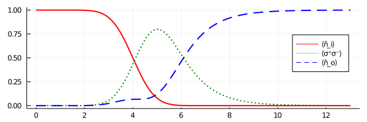

Scattering of a single photon
In this example, we analyse the scattering of a single photon in a Gaussian mode at a single chiral two level atom. For comparison, we reconstruct the second figure from the paper from A. Kiilerich, K. Mølmer, on which this package is based. For this problem, the scatter problem can be solved analytically and the the outgoing mode function is
\[ \psi_\mathrm{out}(t) \propto \exp\left(-\frac{(t - τ)^2}{2}\right) - \sqrt{\frac{π}{2}} \exp\left(- \frac{t - τ}{2} + \frac{1}{8} \right) \mathrm{erfc}\left(\frac{-2(t - τ) + 1}{2 \sqrt{2}}\right),\]
where the incoming Gauss mode has a width of $\sigma = 1$ and it's center of mass arrives at the atom at time $\tau$.
We start the simulation by loading the necessary packages
using ChiralWaveguide, Plots, SpecialFunctions # SpecialFunctions has erfcdefining the incoming single photon wave packet
wavepacket = WavePacket(GaussMode(τ = 4.0), Fock(1))and create the final mode we want to observe (notice the mode does not have to be normalised)
function outputModeFunction(t, τ = 4.0)
abs(t-τ) > 10 && return 0.0 # cutoff for numerical stability
return exp(-(t - τ)^2/2) -
√(π/2) * exp(-(t - τ) / 2 + 1 / 8) * erfc((-2(t - τ) + 1) / (2 * √(2)))
end
outputMode = Mode(t -> outputModeFunctionFig2(t, 1.0, 4.0))Notice that we did not provide the coupling rates for the outputMode ourself but let the constructor of Mode take care of that, which numerically solves the integrals for us.
We now have every constituents to define
problem = WaveguideProblem(TwoLevelChain(1), wavepacket, outputMode, 13.0)and solve the scattering problem
ts, ρs = solve(problem)This already completes the simulation and we can now define the observables of interest. The density matrices ρs at time ts are ordinary QuantumOptics.jl operators and we can therefore utilise every tool within QuantumOptics.jl.
basis = ρs[end].basis_l
n̂ᵢ, n̂ₒ = number(basis.bases[1]), number(basis.bases[3])
σ⁺σ⁻ = transition(NLevelBasis(2), 2, 2)Finally, we draw the populations of the input cavity, the excited state of the atom, and the output cavity, resulting in the same figure as from the paper:
plot( ts, expect(1, n̂ᵢ, ρs) .|> real, label = "⟨n̂_i⟩", line = (2, :red))
plot!(ts, expect(2, σ⁺σ⁻, ρs) .|> real, label = "⟨σ⁺σ⁻⟩", line = (2, :green, :dot))
plot!(ts, expect(3, n̂ₒ, ρs) .|> real, label = "⟨n̂_o⟩", line = (2, :blue, :dash))
plot!(size = (600, 200), legend = :right)
Entire Script
using ChiralWaveguide, Plots, SpecialFunctions # SpecialFunctions has erfc
wavepacket = WavePacket(GaussMode(τ = 4.0), Fock(1))
function outputModeFunction(t, τ)
abs(t-τ) > 10 && return 0.0 # cutoff for numerical stability
return exp(-(t - τ)^2/2) -
√(π/2) * exp(-(t - τ) / 2 + 1 / 8) * erfc((-2(t - τ) + 1) / (2 * √(2)))
end
outputMode = Mode(t -> outputModeFunction(t, 4.0))
problem = WaveguideProblem(TwoLevelChain(1), wavepacket, outputMode, 13.0)
ts, ρs = solve(problem)
basis = ρs[end].basis_l
n̂ᵢ, n̂ₒ = number(basis.bases[1]), number(basis.bases[3])
σ⁺σ⁻ = transition(NLevelBasis(2), 2, 2)
plot( ts, expect(1, n̂ᵢ, ρs) .|> real, label = "⟨n̂_i⟩", line = (2, :red))
plot!(ts, expect(2, σ⁺σ⁻, ρs) .|> real, label = "⟨σ⁺σ⁻⟩", line = (2, :green, :dot))
plot!(ts, expect(3, n̂ₒ, ρs) .|> real, label = "⟨n̂_o⟩", line = (2, :blue, :dash))
plot!(size = (600, 200), legend = :right)